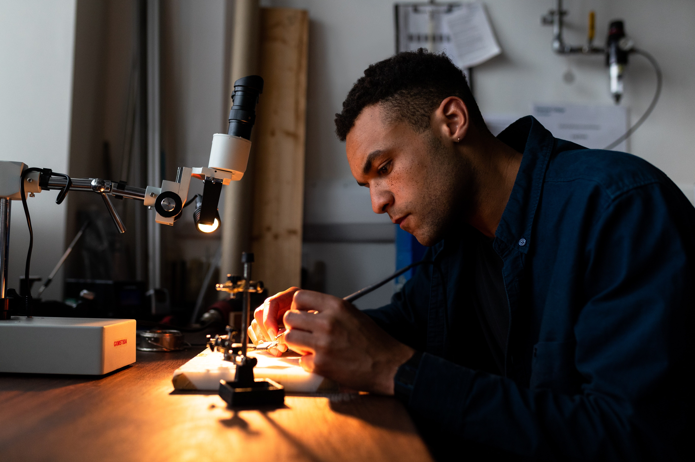

home > 채용정보 > 주요직무
주요직무
a major task
- R&D 직무
- R&D 직무는 한솔테크닉스에서 생산 중인 제품(HW)과 제품 구동을 위한 시스템(SW)을 개발하는 역할을 담당하고 있습니다.
- Display장치(TV, Monitor등)에 들어가는 전원공급장치(SMPS)나 생활가전 제품군의 전력변화장치,
인버터 제어기, 히터제어기 및 Charger등을 개발하는 HW개발직무, 가전제품에 적용 중인 모터나 인버터를
구동하기 위한 시스템을 개발하는 SW직무로 구분할 수 있습니다. 담당하는 제품에 따라 팀이 구분되어 있습니다.
- 인재육성
- 입사 직후에는 팀마다 조금씩 다를 수 있으나 개발 환경이나 프로세스, 팀에서 사용하는 툴을 익히게 됩니다.
개발에 필요한 부품을 수급하고 기본적인 평가시험을 수행하기도 하며, 샘플 자재 및 생산 관련 업무를 주로 담당하게 됩니다. - 기초적인 적응이 끝난 뒤에는 실무 개발담당자로서 개발 제품의 요구사항을 분석하고 이를 바탕으로 필요한 자료를 수집하고,
실제 제품을 설계하거나, 개선이 필요한 제품의 경우 문제점을 분석하여 이를 수정하기 위한 업무들을 담당하게 됩니다. - 또한 담당하고 있는 제품의 PM으로서 개발 일정을 수립하고 고객사와 이슈 등을 협의하는 역할도 수행하게 됩니다.
- 이후 소속된 부서의 전체적인 프로젝트를 관리하고, 부서 구성원들의 역량 향상을 위한 내/외부 활동을 진행하거나,
개발과제를 수주하고, 업무를 위한 사내 유관부서의 협조를 담당하는 관리자로 성장하게 됩니다.
